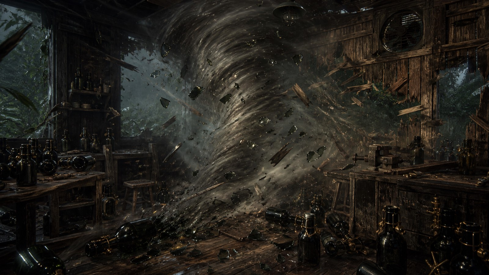
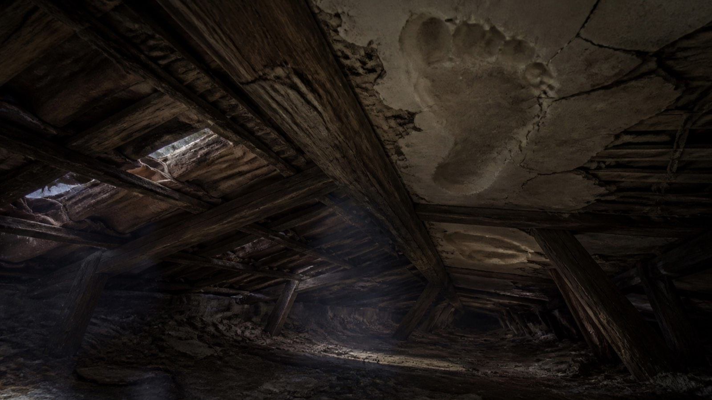
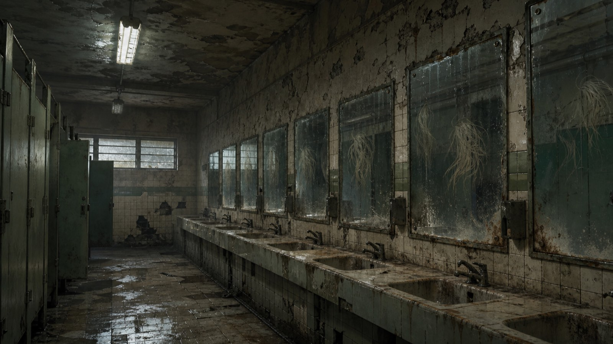

Pitch do projeto Expedição e Sacrifício
Expedição e Sacrifício · título provisório
Visual novel de horror brasileiro
Até onde você levaria o seu grupo?
O horror nasce da responsabilidade: preparar, interpretar e escolher quem será perdido.
A premissa
Um mapa partido. Três expedições.
Um bardo reúne oito heróis atrás de um tesouro ligado à própria família. Duas metades do mapa revelam o último caminho.
ConfirmadoOrdem escolhível pelo jogadorTesouro ainda pendente
Preparação com consequências
Preparar já é jogar.
Escolher quem entra também define quais respostas ficam na cidade.
heróis
duas competências por pessoa
escolhidos
nenhum trio cobre tudo
competências do bardo
ele observa e narra
Exemplo · A Procissão das Almas
Três respostas plausíveis. Nenhuma etiqueta.
Com a competência: sucessoSem a competência: falha letalSem dados: leitura e consequência
Horror por responsabilidade
O sacrifício é uma escolha.
A falha não termina numa tela de derrota. Ela pede que o jogador a torne pessoal.
A consequência continua
A expedição segue ferida.
Sobreviver à falha pode tornar cada encontro seguinte mais perigoso.
Falhar
A competência escolhida não estava no grupo.
Sacrificar
O jogador escolhe um herói presente para morrer.
Recalcular
Duas competências somem do elenco disponível.
Prosseguir
O caminho continua mesmo com um único herói.
Recuar não apaga mortes ou encontros reveladosNão há segunda tentativa gratuita
Identidade
Horror reconhecivelmente brasileiro.
Mata, engenho, assobios, procissões, telhados e reflexos viram regras — não decoração.
16 armadilhas confirmadas


Descoberta sem manipulação
Cada campanha revela o catálogo inteiro.
Sem repetição dentro da masmorraPosições persistem após recuoSorteio não se adapta ao grupo
Primeira versão representativa
Um núcleo enxuto para a Jam.
meta do GDD
Onde está o jogo
- Preparação do grupo
- Leitura das pistas
- Escolha de abordagem
- Sacrifício e persistência
Fora do escopo
- Combate e rolagens
- Níveis e itens estatísticos
- Recursos consumíveis
- Geração procedural de texto
Terreno firme · espaço criativo aberto
O que sabemos. O que decidimos juntos.
O núcleo que protegemos
- Loop de preparação, inferência e sacrifício
- Matriz de 8 heróis e 8 competências
- 16 armadilhas e três abordagens
- Morte, recuo e três masmorras
O trabalho criativo do time
- Tesouro, horror familiar e clímax
- Nomes, visuais e vínculos dos heróis
- Direção de arte, áudio e interfaces
- Cronograma, cortes, QA e publicação
Baseline de protótipo Os nomes diegéticos atuais dos caminhos e o tratamento visual existente são materiais de trabalho — não decisões finais.
Próximo passo
Qual versão deste jogo conseguimos tornar inesquecível?
O sistema já nos dá uma promessa: entrar preparado, interpretar o perigo e viver com quem escolhemos perder.
Quais são as três prioridades que precisamos fechar primeiro — e quais perguntas vamos levar imediatamente para protótipo e playtest?